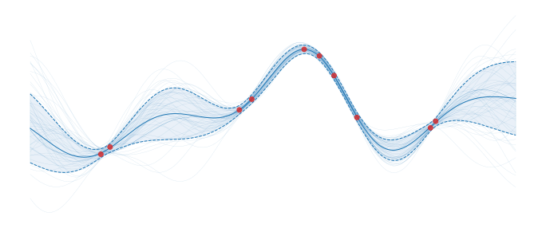

Welcome to GPJax
GPJax is a didactic Gaussian process (GP) library in JAX, supporting GPU acceleration and just-in-time compilation. We seek to provide a flexible API to enable researchers to rapidly prototype and develop new ideas.

"Hello, GP!"
Typing GP models is as simple as the maths we would write on paper, as shown below.
Quick start
Install
GPJax can be installed via pip. See our installation guide for further details.
New
New to GPs? Then why not check out our introductory notebook that starts from Bayes' theorem and univariate Gaussian distributions.
Begin
Looking for a good place to start? Then why not begin with our regression notebook.
Citing GPJax
If you use GPJax in your research, please cite our JOSS paper.
@article{Pinder2022,
doi = {10.21105/joss.04455},
url = {https://doi.org/10.21105/joss.04455},
year = {2022},
publisher = {The Open Journal},
volume = {7},
number = {75},
pages = {4455},
author = {Thomas Pinder and Daniel Dodd},
title = {GPJax: A Gaussian Process Framework in JAX},
journal = {Journal of Open Source Software}
}